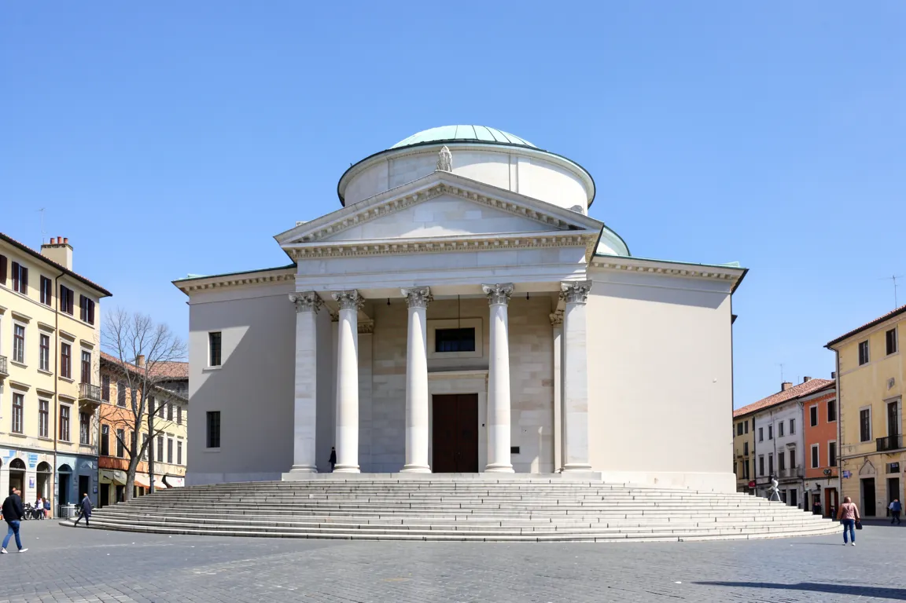

architecture · 1750s–1840s · also: Greek Revival, Federal style, Adam style
A clear, pure classicism drawn from Greek and Roman ruins: a temple front, plain wall surfaces and a strong cube. It answered the excess of the Baroque with reason, and gave the new states their museums, parliaments and banks.

Core thesis
Architecture should be reasoned: build from the first principles of the Greek temple, and let the plain wall and a true order carry the dignity of the state.
Design principles
Put a temple front, a portico of 4 to 8 columns with a pediment, on a plain rectangular block.
Use the orders in their correct Greek or Roman form, with the column height at 6 to 10 diameters.
Keep the wall flat and smooth: ashlar or stucco without projections beyond 150mm except the portico.
Compose symmetrically about one axis, with a calm rhythm of equal bays and no curved fronts.
Use simple geometric solids: the cube, the cylinder and the hemisphere, and put the dome on a drum.
Use ornament sparingly, and take it from antique sources only: the anthemion, the egg and dart, the key.
Anti-patterns
Curved, broken or twisting fronts and pediments
Dense gilded ornament and illusionistic fresco
Pointed arches, turrets or picturesque asymmetry
Orders in the wrong proportion or applied without a reason
Bright saturated colour on the main walls
Many small projections and bays that break the plain wall